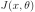
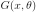
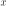
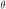
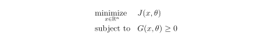
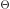
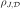
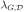
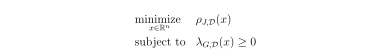

User manual¶
The goal is to formulate and solve robust optimization problem.
A robust optimization problem consists of a parametric objective objective

and/or a parametric inequality constraint
where
is a design variable and
a parameter.
The problem is made robust by:
modelling the parameter by the the random vector

with given distribution .
.choosing measure functions

and
for the objective and constraint functions.
The the robust optimization problem reads:

The definition of the measure functions is associated to
the concept of MeasureEvaluation.
A measure evaluation can be used through MeasureFunction
to expose generic function services.
A robust optimization problem can be defined with
RobustOptimizationProblem, and then solved using a
RobustOptimizationAlgorithm.
Note that this measure evaluation can be discretized over so as
to define a deterministic optimization problem using MeasureFactory.
Measure function¶
|
Measure function. |
Measure evaluation¶
|
Measure evaluation base class. |
|
Mean measure function. |
Mean/variance tradeoff measure function. |
|
|
Quantile measure function. |
|
Worst case measure function. |
|
Variance measure function. |
|
Joint chance measure function. |
|
Individual chance measure function. |
|
Aggregated measure function. |
Define a robust optimization problem¶
|
Robust optimization problem. |
Discretize a measure function¶
|
Discretize a measure function. |
Solve a robust optimization problem¶
|
Robust optimization algorithm base class. |
Sequential Monte Carlo robust optimization algorithm. |